In this chapter, you will learn how
to draw gear systems. First you will do some orthographic or
two-dimensional (2D) drawings that show the exact sizes and
numbers of teeth on the gears. For these types of drawings, you
do not have to draw the teeth, so it is much easier.
Then you will write a design brief
for some gear systems of your own and produce specifications
for the systems. You will learn to use drawing instruments and
an isometric grid to draw your gear systems in three dimensions
(3D).
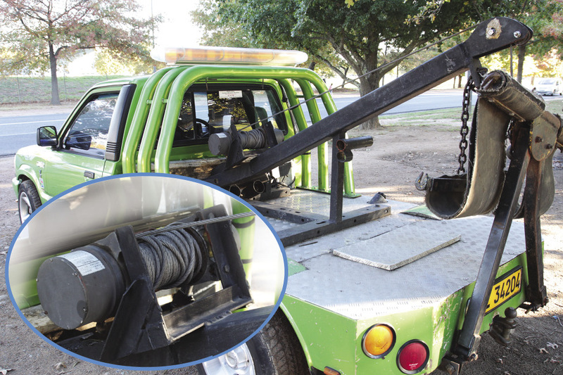Figure 1: The back of a
tow truck showing the winch that is used to lift and pull cars
that have broken down. A winch is a gear that gives a
mechanical advantage. You will learn about winches in this
chapter.Figure 2: Spur
gears with different radiuses. You will learn how to draw
technical diagrams of gears when you are given the radius and
the number of teeth of each gear. You don't need to draw the
teeth!
Draw gears in two dimensions (2d)
When you draw a gear wheel, you show a
number of different circle sizes, but you do not show the gear
teeth. The specification for the gear wheels and teeth is shown
using notes and tables.
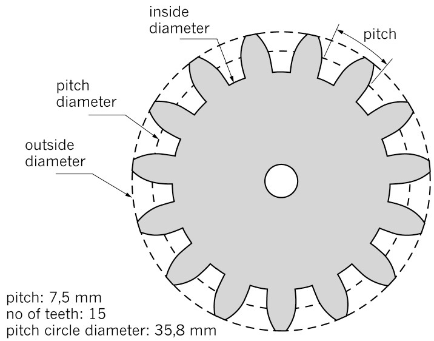Figure 3: How to draw a gear wheel with 15 teeth
Figure 3 shows all the important
information for a gear wheel:
The pitch is the space for each tooth.
The pitch diameter is the size of the circle
that can fit all the teeth, up to where they mesh with the
teeth of another gear.
The outside diameter shows the size of the
circle that surrounds the teeth.
The inside diameter shows where the teeth are
joined to the inner wheel.
The depth of the teeth is the difference
between the outside and inside diameters.
The pitch circle diameter on this
gear is 35,8 mm. The distance around the pitch circle of this
gear is the pitch circle circumference, which is:
Circumference = π × D = 3,1428
× 35,8 mm = 112,5 cm.
So the pitch, or the space for each
tooth = 112,5 ÷ 15 = 7,5 mm.
Look at Figure 4. This figure shows
how to draw a gear wheel.
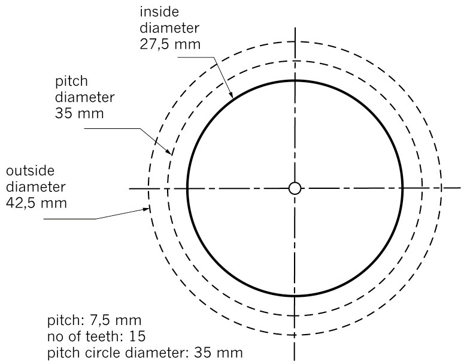Figure 4: How to draw a gear wheel
Now draw this gear wheel on the grid
by following these steps:
Step
1: Draw two crossing centrelines to mark the centre of the
gear wheel.
Step
2: Draw the pitch circle using a compass. In this case, you
will need to set the compass radius to ½ of 3,5 cm
(35 mm), which is 17,5 mm.
Step
3: Draw the outside diameter using a compass. You will need
to set the compass radius to ½ of 4,25 cm (42,5
mm), which is a little more than 21 mm.
Step
4: Draw the inside diameter. You will need to set the compass
radius to ½ of 2,75 cm (27,5 mm), which is just
under 14 mm.
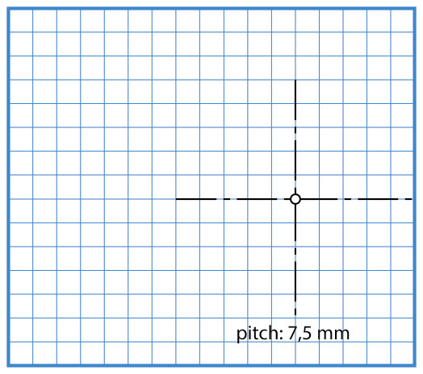Figure 5
Drawing meshing gears
Look at the drawing of the meshing
gears in Figure 6. A small driver gear is shown on the left. It
is driving a larger driven gear on the right.
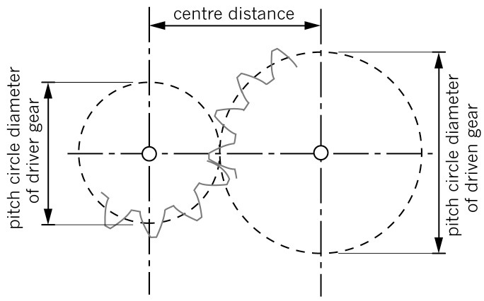Figure 6: Meshing gears
Two spur gears will only mesh properly if:
the size and shape of their
teeth are the same, in other words the pitch and the depth
of gear teeth on both gears are the same, and
the pitch circle
circumferences of the two gears are touching each
other.
The line connecting the centres of
the two gears is called the centre line. Centre lines are
drawn as chain lines, with long and short dashes.
The distance between the gear
centres is shown on this drawing as the centre distance. The exact
centre distance for two meshing gears is the pitch circle
radius of the driver gear plus the pitch circle radius of the
driven gear.
Remember: The radius is
½ of the diameter.
If, for example, this driven gear had
15 teeth and a pitch circle diameter of 35 mm, and the
driven gear had 30 teeth and a pitch circle diameter of
70 mm, then the centre distance would be:
Centre distance = ½ ×
35 mm + ½ × 70 mm = 17,5 mm + 35 mm = 52,5
mm.
How to draw meshing gear systems
Look at the meshing gears in Figure 6
on the previous page. Figure 7 below shows how to draw a
diagram of this gear system, which has a 15-tooth driver gear
and a 30-tooth driven gear.
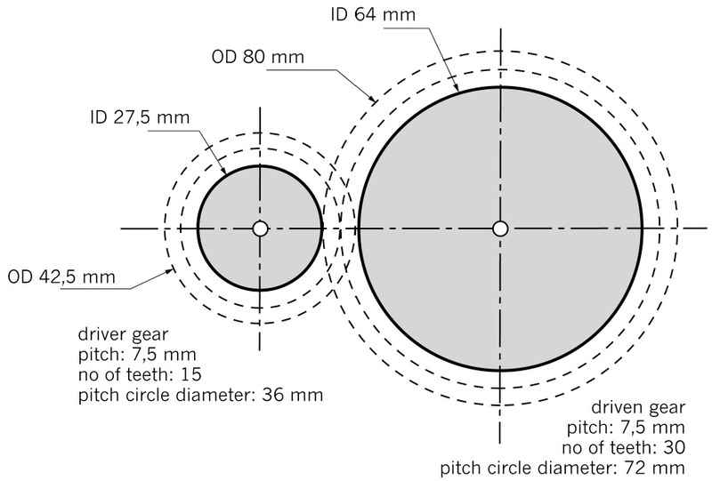Figure 7
Step 1: Start by drawing a
horizontal centre line for both gears.
Step 2: Draw a vertical centre
line for the driver gear on the left. This marks the centre
of the driver gear wheel.
Step 3: Calculate the pitch
centre distance. In this case, it would be: ½ of
36 mm + ½ of 72 mm = 54 mm.
Step 4: Measure the centre of
the driven gear from the centre of the driver gear.
Step 5: Use a compass to draw
the two pitch circles so that they just touch each other. In
this case, the pitch circle of the driver gear will be
36 mm, so you will need to set the compass to a radius
of 18 mm. The radius setting for the larger driven gear
will be 36 mm, twice as big.
Step 6: Use your compass to
draw in the inside diameter (ID) and outside diameter (OD)
circles.
Step 7: Now add the
information that tells people about the teeth. This is
written underneath each gear wheel or on a table next to the
drawing.
Draw gear systems with the driven gear rotating in the opposite direction of the driver gear
1. Use the steps on
the previous page to draw a gear system with 15 teeth on a
driver gear with a 36 mm diameter and 30 teeth on a driven
gear with a 72 mm diameter. Use the grid paper in Figure
8. The driver gear drawing has been started for you.
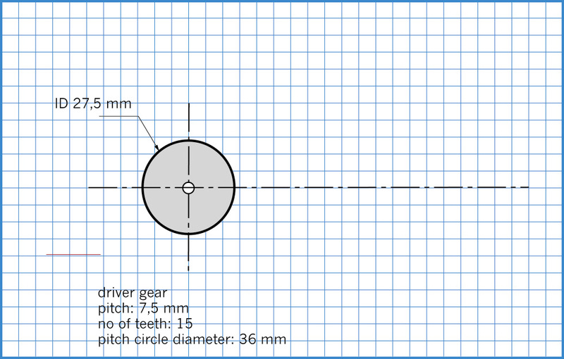Figure 8: Draw the driven gear on the
grid.
2. When you have
finished your drawing, use arrows to show the direction of
rotation of the driven gear if the driver is turning
clockwise.
3. Will the driven
gear be rotating faster or slower than the driver?
Draw gear systems with the driven gear rotating in the same direction as the driver gear
Do you remember what an idler gear
does? It meshes between the driver and the driven gear. The
idler does not change the gear ratio. All it does is change the
direction of the driven gear. A gear system with an idler can
have the driven and the driver gear turning in the same
direction.
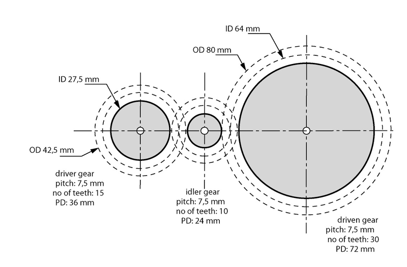Figure 9
To draw a gear system with an idler,
you will need to draw three gears instead of two. But the
principle stays the same.
1. Draw the gear
system in Figure 9 on the grid paper on the next
page.
2. Draw arrows to show
which way each gear will turn.
3. Do the driver and
driven gears rotate in the same or in opposite directions?
4. If the driver gear
rotates at 1 500 rpm, how fast will the driven gear rotate?
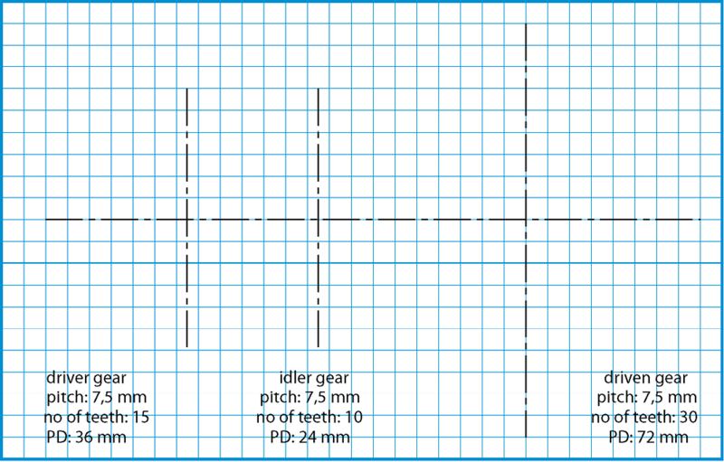Figure 10
Homework: draw gear systems with the driven gear rotating faster than the driver gear
Part A: Rotating in opposite directions
1. Draw the gear
system shown in Figure 11. The driver gear has 45 teeth and a
pitch circle diameter of 107 mm. The driven gear has 15
teeth and a pitch circle diameter of 36 mm. Use the grid
paper in Figure 12.
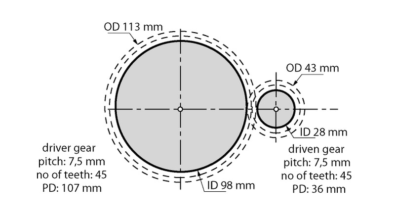Figure 11Figure 12: Draw your
gear system on this grid paper.
2. What can you say
about the speed of the driven gear compared to the driver
gear?
3. Does this system
change the direction of rotation?
Part B: Rotating in the same direction
1. Add an idler to
this gear system as shown in Figure 13. Now draw this new
system on the grid paper in Figure 14.
2. Draw arrows on the drawing to show the direction of rotation
of each gear.
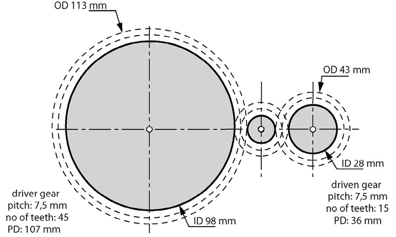Figure 13Figure 14: Draw your
gear system with an idler gear on this grid paper.
3. What does the idler
do?
Write a design brief with specifications for gears
Gear systems have two important
uses:
A gear system can give a
mechanical
advantage. In this case, a small driver gear is used
to turn a larger driven gear. The output of the system turns
more slowly, but with greater turning force.
Gears can also give a
speed
advantage. In this case, a large driver gear will turn
a smaller driven gear. The driven gear turns faster than the
driver gear, but with less turning force.
In this lesson, you will design gear
systems that use both these advantages.
A design brief for a gear that gives a mechanical advantage
Look at Figure 15. It shows a winch
for a tow truck.
Winches are used to pull broken-down cars onto the back of a
tow truck.
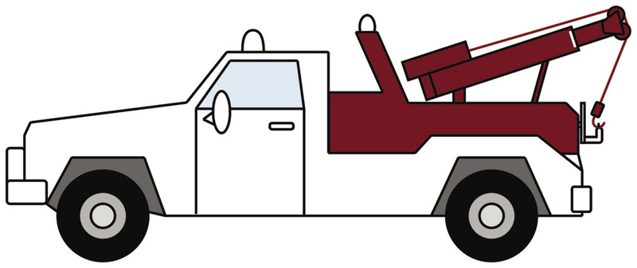Figure 15: This mechanism is a winch. It is used to pull broken-down cars onto the back of a tow
A problem with this winch
The company using this winch has
found that is not powerful enough to pull large vehicles.
The company asked you to improve
the winch. They want the winch to pull large vehicles that are
three times as heavy as ordinary cars.
The word tow means to pull a car behind
a moving truck for a certain distance. Tow trucks can tow
cars, but they can also pull cars onto the back of the truck
to carry them to the repair shop.
Write a design brief
1. Write a few short,
clear sentences that summarise the problem that needs to be
solved, as well as the purpose of the proposed solution. Begin
your first sentence with the words:
I am going to design ...
2. Write a list of
specifications for the new winch solution.
Remember: Specifications are
lists of things that your solution must do, and some things
that it must not do.
A design for the improved winch
3. Describe how you
are going to improve this winch.
4. How will you know
that the winch can pull vehicles that are up to three times
heavier than an ordinary car?
5. Complete the
drawing in Figure 16 to show how you will improve the winch.
Draw the driver gear on top of the motor. Then show where you
will place the winder, and draw the winder gear. Use a pitch of
7,5 mm and a depth of 5,0 mm for the gear teeth.
Label your drawing with the pitch and number of teeth on each
of the gear wheels.
Figure 16: Use
this grid to show how you will improve the winch.
Write a design brief for a gear that gives a speed advantage
Look at the system shown below. It
shows the inside of a wind turbine. The wind turns the
propeller and the propeller turns an electric generator to make
electricity.
The problem with wind turbines
The blades of wind turbines turn
slowly, at about 9 to 19 rpm. But the electric generator that
is driven by a wind turbine needs to turn faster. A turbine
manufacturer needs a gear system that will make the generator
turn at least four times faster than the wind turbine. Can you
help?
Figure 17: Inside a wind turbine
1. Write a design brief. You need
to write a few short, clear sentences that summarise the
problem that needs to be solved, and the purpose of the
proposed solution. Begin your first sentence with the
words:
I am going to design ...
2. Specifications for your solution. Write a list of specifications for the gear
system solution.
A design for the improved wind turbine
1. Draw your design on
the grid in Figure 18. Your design should show how you will
make the driven generator of the wind turbine move four times
faster than the driver. Use a pitch of 0,75 cm and a height of
0,50 cm for the gear teeth.
2. Label your drawing
with the pitch and number of teeth on each of the gear
wheels.
Figure 18: Draw your design on this grid.
Draw gears in three dimensions (3d)
Drawing gears in 3D is mostly about
drawing circles in 3D. In this activity, you will draw 3D gears
on isometric grid paper.
If you follow the instructions step
by step, your drawing will be correct.
How to draw an isometric circle
Look at the pictures in Figure 19.
They show how to draw a circle on isometric grid paper. This
circle has a diameter of 2, so it is nearly the size of a small
gear wheel. Below is an outline of how it can be done.
Step 1: Make a dot where you want the centre of the circle
to be.
Step 2: Draw a horizontal chain line going from left to
right up the sloping lines of the grid.
Step 3: Draw a vertical chain line going through your
centre point up the page.
Step 4: Draw a guide box that will surround your circle.
This box is shown in red on picture A.
Step 5: Mark four dots at the centre points of the square.
These dots are shown in red in Figure 19B. These dots mark
the outside points of your circle.
Step 6: Now sketch a curve joining these four dots. This
shape is not a true circle. Its actual shape is an ellipse
slanting at 30°.
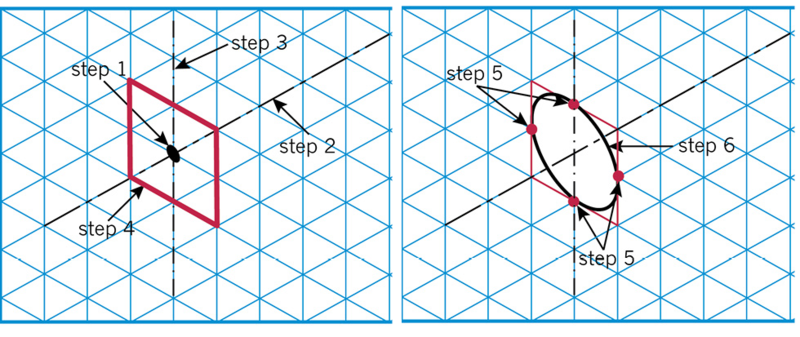
Figure 19 A and B: How to
draw an isometric circle
Step 7: Now see if you can
draw one for yourself. Copy the diagram in Figure 20 A onto
the isometric grid in Figure 20 B.
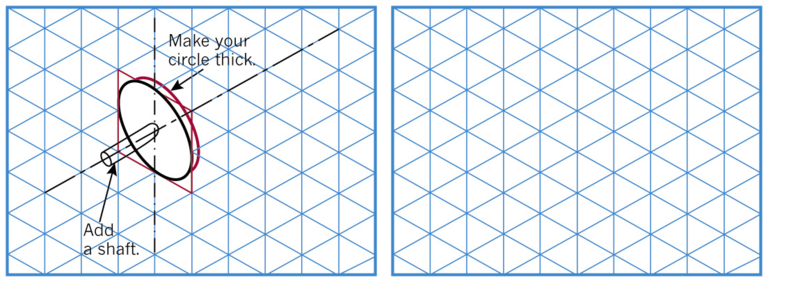Figure 20 A and B: Draw your own
isometric circle on grid B above.
Draw the gear system that you designed for the winch
Look at the
picture in Figure 21. Two gears have been drawn in 3D using
isometric grid paper. The teeth of the gear are not shown.
1. Use the grid
on the next page to help you draw the system you
designed for the winch. Draw the gears to the same size as you
specified for the winch in section 3.2.
2. Add a table of
information to your drawing that gives all the information
necessary for someone to make these gears.
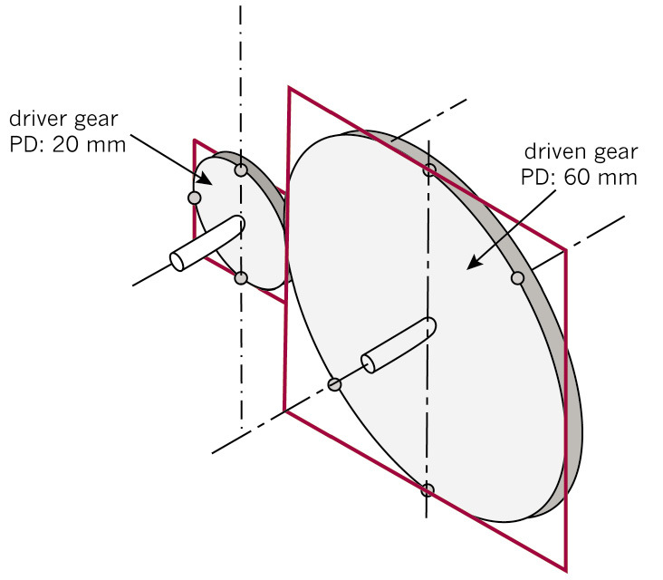Figure 21: Two gears drawn in 3D using isometric paper
Draw your gear
system for the winch onto the grid in Figure 22:
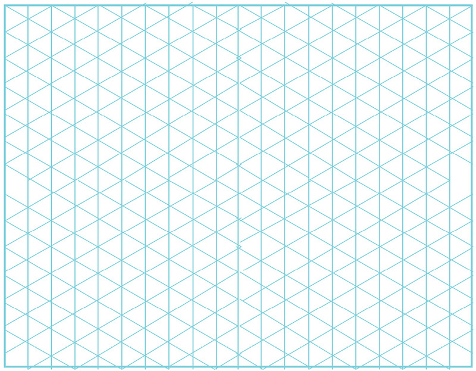Figure 22: Draw your gear system for the
winch in the grid above.
Next week
Next week, you will investigate a type
of gear called bevel gears. You will look at the gears on a
bicycle and learn about chain and belt drives. Then you will
learn how to analyse gear systems using the systems
approach.